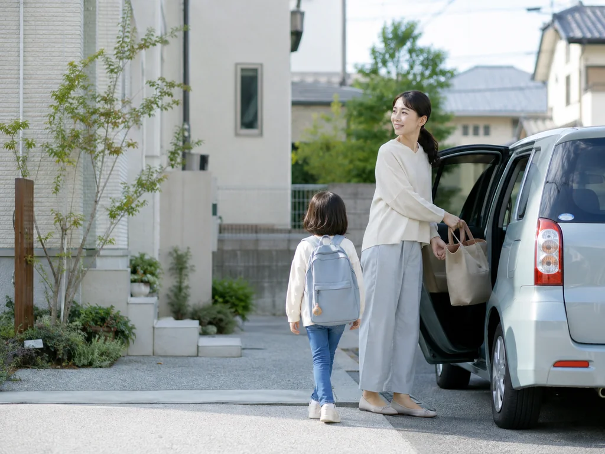
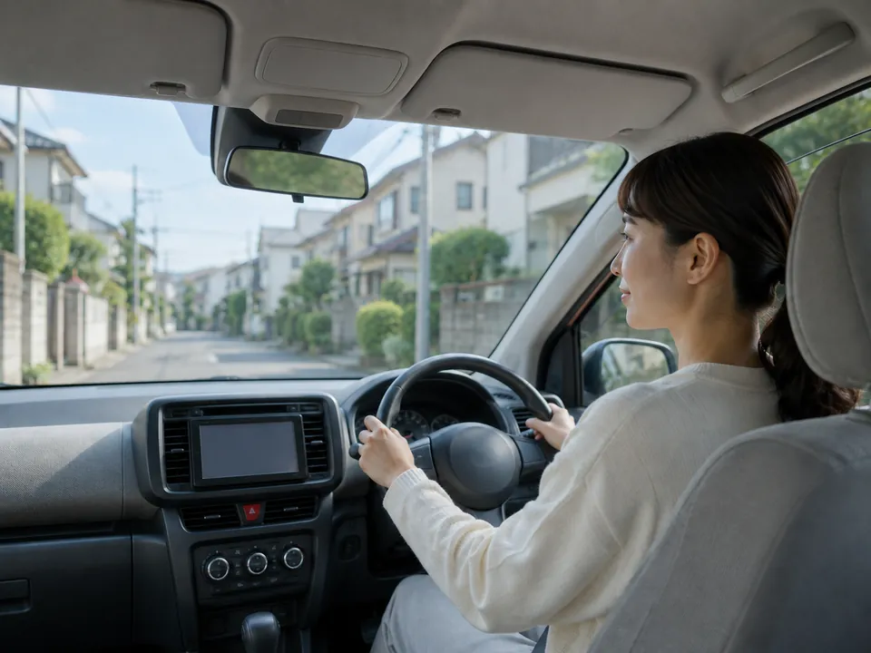
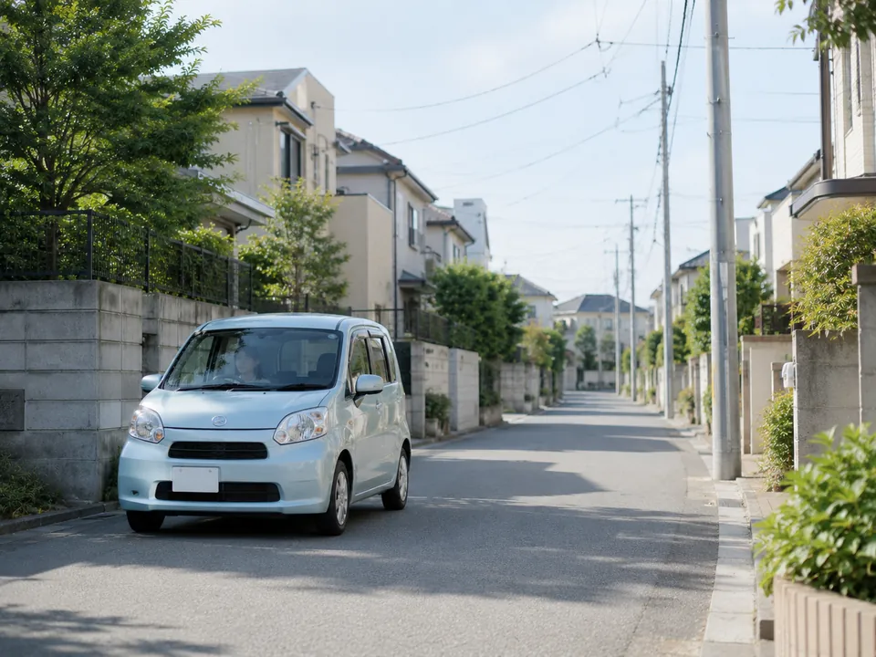
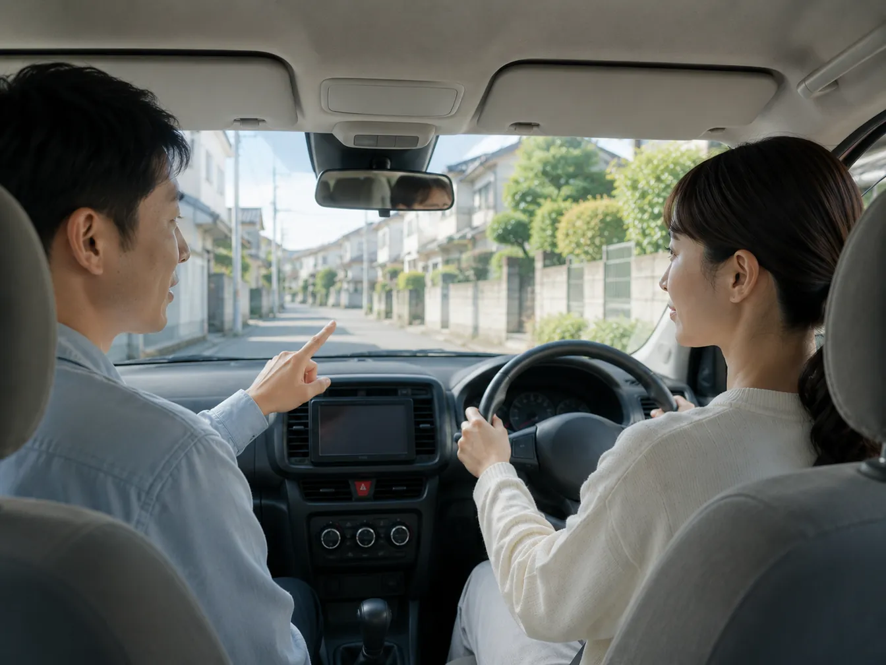
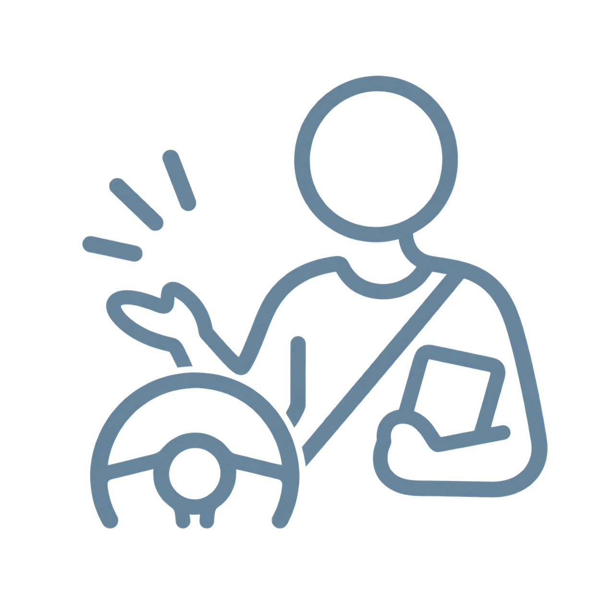
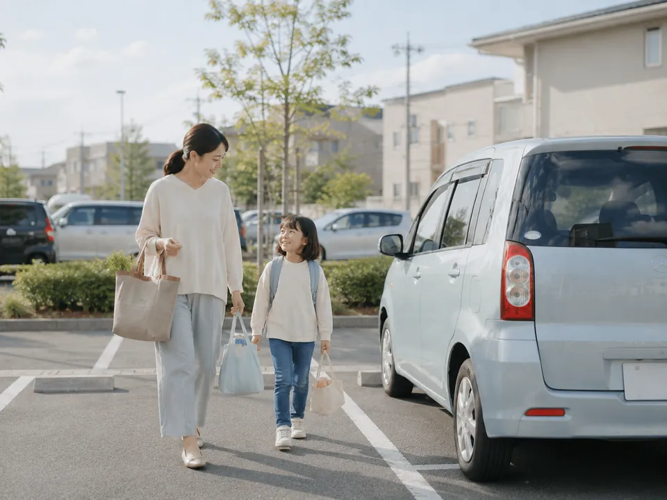

Lesson 01｜送迎ルート
毎日使いたい道を、そのまま練習。
保育園までの道を走り、園の近くで右左折や駐車を練習します。

PROBLEM
何から練習すればいいか分からない。
スーパーや病院での駐車が不安。
対向車や後ろの車が気になって焦る。
子どもを乗せて運転するのが怖い。
「今行けたよ」と言われると焦る。
CONCEPT

michiは、久しぶりに運転する方のための出張レッスンです。ご自宅やご希望の場所へ伺い、今の運転に合わせて練習します。
ペダルの感覚が不安なら、発進と停止から。駐車が苦手なら、車を停める位置やハンドルを切るタイミングを一緒に確認します。
練習するのは、普段の暮らしで使う道。
たとえば保育園への送迎なら、園の近くで曲がりにくい交差点や、駐車場への入り方まで確認します。スーパーや病院など、まずは自分で行けるようになりたい場所を一つ教えてください。
LESSON
走りたい道や苦手な操作に合わせて、練習内容を選べます。
Lesson 01｜送迎ルート
保育園までの道を走り、園の近くで右左折や駐車を練習します。
Lesson 02｜駐車
自宅やスーパーの駐車場を想定し、バック駐車や切り返しを練習します。
Lesson 03｜狭い道
車幅やすれ違い方を確認し、止まって待つ判断も練習します。
Lesson 04｜車線変更
交通量の少ない道から、ミラーの確認や車線変更のタイミングを練習します。
Lesson 05｜右左折
交差点で歩行者や対向車を確認し、右左折するタイミングを練習します。


FEATURES
Feature 01
保育園やスーパーなど、普段行く場所まで走ります。
Feature 02
駐車や車線変更など、苦手な操作だけでも練習できます。
Feature 03
基本操作を確認し、その日の運転に合わせて進めます。
SAFETY
Safety 01｜補助ブレーキ
講習車には助手席側の補助ブレーキを装備。対応可能な自家用車にも簡易補助ブレーキを使います。
Safety 02｜事前ヒアリング
最後に運転した時期、苦手なこと、走りたい場所を確認します。
Safety 03｜無理に公道へ出ない
基本操作に不安があれば、シートやミラー、ペダルの確認から。安全に走れる場所で練習します。
Safety 04｜万一への備え
保険と事故時の対応体制を整えています。

Safety 05｜インストラクター
ペーパードライバーの不安に配慮しながら、安全に必要な判断を行います。
Safety 06｜車を選べる
自家用車か、補助ブレーキ付きの講習車を選べます。
子どもの同乗
初回は原則、お子さまの同乗なしで行います。講師が安全に練習できると判断した場合は、2回目以降に同乗できます。
DRIVING CHECK
4つの質問で、不安や目的に合った練習の目安が分かります。
このチェックは運転技量や安全性を判定するものではありません。実際のレッスン内容は、当日のヒアリングと運転状況を確認したうえで決定します。
RESULT 01
久しぶりの運転は、
基本を思い出すところから。
シートやミラーの調整、ペダルや基本操作を確認してから、
交通量の少ない自宅周辺をゆっくり走る練習がおすすめです。
最初から目的地まで行く必要はありません。
まずは、「車を動かすことに少し慣れる」ところから始めましょう。
おすすめ練習
RESULT 02
不安なところを、
ひとつずつ練習してみましょう。
駐車、狭い道、車線変更など、
特定の場面に強い不安がある場合は、その部分を重点的に練習できます。
全部を一度にできるようにする必要はありません。
「今日は駐車だけ」というレッスンでも大丈夫です。
おすすめ練習
RESULT 03
ゴールは、
いつもの道を自分で走ること。
基本操作への不安が比較的小さく、
送迎や買い物など具体的な目的がある方は、
実際にこれから使いたいルートを中心に練習する方法がおすすめです。
交差点や駐車など途中の不安も確認しながら、
「ここなら一人でも行けそう」と思える範囲を少しずつ増やします。
おすすめ練習
INSTRUCTOR
michi Instructor
自動車教習の指導経験を経て、現在はペーパードライバー講習を担当。自身も子育て中で、送迎や買い物に使う道での練習を大切にしています。
できなかったことより、今日できたことを。
今日できたことを一緒に振り返り、次の練習につなげます。
FLOW
希望日時（第3希望まで）、運転のブランク、練習したいことをフォームに入力します。
最後に運転した時期や苦手なこと、走りたい場所をお聞きします。
講師がご自宅や指定場所へ伺います。自家用車か講習車を選べます。
シートやミラーの位置、ペダルやウインカーの操作を確認します。
その日の運転状況に合わせ、駐車や送迎ルートなどを練習します。
できたことや残った不安を確認し、次の練習内容を考えます。
VOICE
BEFORE
子どもを乗せるのが怖くて、保育園の送迎はほとんど夫に頼んでいました。
LESSON
初回は子どもを乗せず、自宅周辺で基本操作を練習。その後、保育園までの道や園の近くでの駐車を練習しました。
AFTER
自分で送迎できる日が増え、いつもの道なら行けると思えるようになりました。
BEFORE
スーパーまで走れても、駐車が不安で車を使わないことが多かったです。
LESSON
よく行くスーパーを想定し、目印やハンドルを切るタイミングを確認しました。
AFTER
車がずれたときの直し方が分かり、時間がかかっても自分で停められるようになりました。
BEFORE
子どもの通院に車を使いたくても、交通量の多い道や車線変更が不安でした。
LESSON
交通量の少ない時間帯に病院までの道を走り、ミラー確認や車線変更を練習しました。
AFTER
必要なときに、自分で子どもを病院へ連れて行けるようになりました。
PRICE
おすすめ
9,800円（税込）
13,800円（税込）
120分 × 3回
38,400円（税込）
対応エリア内の出張料金は講習料金に含む。
名古屋市・愛知県近郊を中心に、ご自宅やご希望の場所へ伺います。
名古屋市 / 豊明市 / 日進市 / 長久手市 / 東郷町 / 大府市 / 刈谷市 / みよし市 / 尾張旭市 ほか
対応エリア外は、場所によっては相談可能。
お子さまの急な体調不良による日程変更は、1予約につき1回までキャンセル料なしで振替可能。
ただし、無断キャンセルには適用しない。
大雨・強風・積雪・路面凍結など、michi側が安全なレッスン実施が難しいと判断した場合は、キャンセル料なしで日程変更する。
小雨は原則実施可能とし、道路・気象状況を見て判断する。
利用者が遅刻した場合、原則としてレッスン終了時刻は延長しない。
安全確認に十分な時間を確保できない場合は、レッスン内容を変更する可能性がある。
FAQ
はい。初回はシートやミラー、ペダルの確認から始め、今の運転に合わせて進めます。
受講できます。苦手な操作や公道への不安を事前にお伝えください。
自家用車でも練習できます。対応できるか、予約時に車種や車両の状態を確認します。
補助ブレーキ付きの講習車を利用できます。慣れてから自家用車に切り替えることもできます。
はい。自宅やスーパーを想定し、駐車に絞って練習できます。
初回は原則、大人だけで行います。講師が安全に練習できると判断した場合、2回目以降はお子さまも同乗できます。
必要な回数は運転のブランクや目標によって異なります。初回90分で運転を確認し、必要に応じて次の練習を考えます。
はい。交通状況や運転の状態から走行が難しい場合は、安全に練習できる場所から始めます。
小雨は原則実施します。大雨・強風・積雪・路面凍結などで安全に実施できないと判断した場合は、無料で日程を変更します。
お子さまの急な体調不良は、1予約につき1回まで無料で振り替えできます。無断キャンセルは対象外です。
READY TO DRIVE
